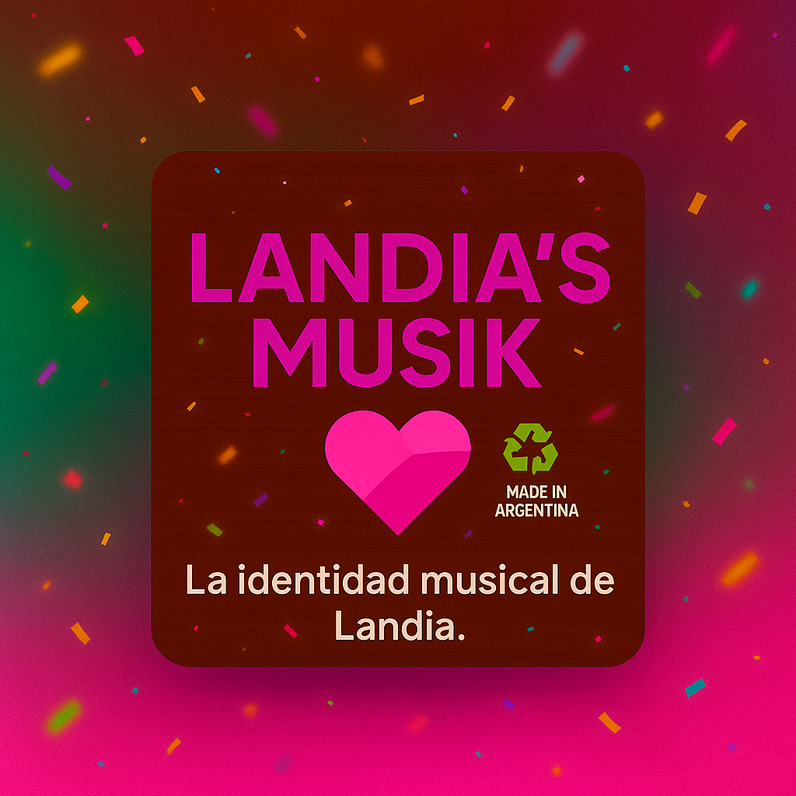

Foto oficial Landia’s Musik (versión fiesta)
Sobre el proyecto
Landia’s Musik es el corazón musical de Landia: un espacio para explorar playlists, escuchas recientes y producción independiente con identidad propia.
Conectá con Landia’s Musik
🵠Last.fm · @animatefran 🧠Spotify 🍎 Apple Music📀 iPod de Landia’s Musik
Listado automático desde Last.fm (@animatefran). Alterná entre Top (7 dÍas) y Recientes. Si no hay datos, se muestra la lista manual.
🶠Playlist del iPod
Cargando…
- Blame It On Your Love (Charli XCX Remix)
- Justice — D.A.N.C.E
- Kylie Minogue — Padam Padam
- Daft Punk — One More Time
- Lady Gaga — Stupid Love
- Calvin Harris — Feel So Close
- Oasis — Wonderwall
- Tame Impala — The Less I Know The Better
- Dua Lipa — Don’t Start Now
- RosalÍa — Bizcochito